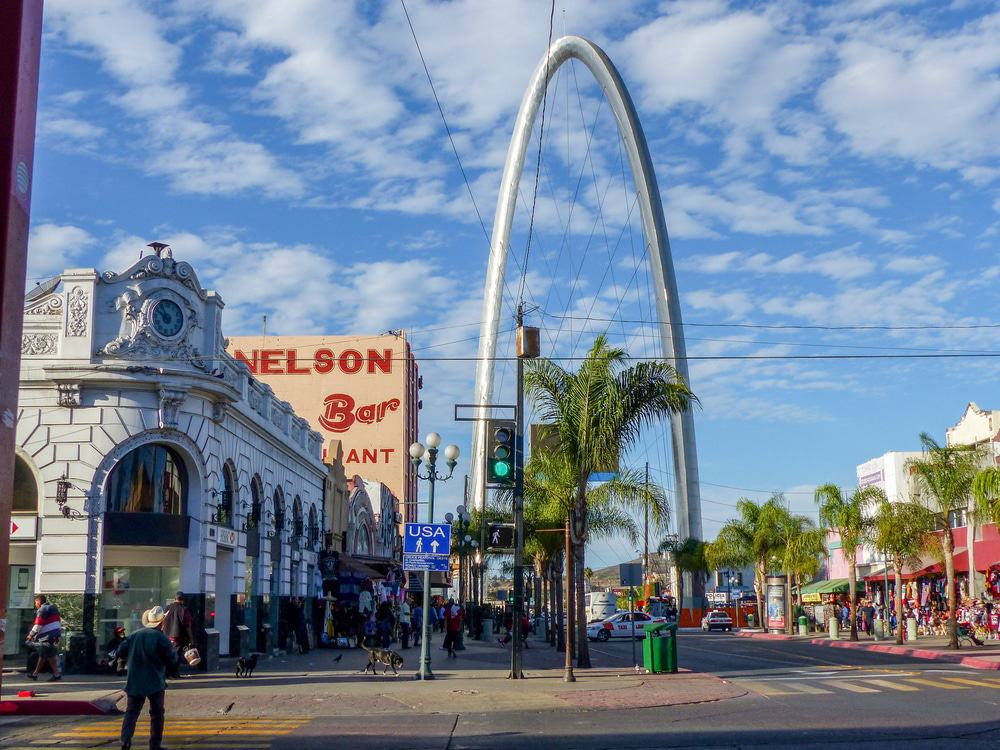

Why Tijuana?
Gateway to Mexico
Tijuana is a city and municipal seat of Tijuana Municipality, Baja California, located on the Pacific Coast of Mexico. It is part of the San Diego-Tijuana metro area and the larger Southern California megapolitan area.
The city was incorporated on 11 July 1889 as urban development began. The city has served as a major tourist destination since the 1880s.